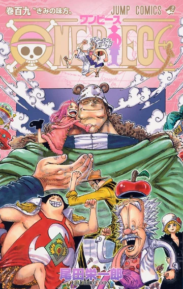

MangaDX
MangaDXIsekai:

- Overlord
- 8.8/10
- What do you do when your favorite game shuts down?...
- 46.25 AED
- That Time I Got Reincarnated as a Slime
- 8.2/10
- Satoru Mikami, a salaryman who...
- 34.02 AED
- Konosuba
- 8.1/10
- The series follows Kazuma Satou, a boy who is sent to a fantasy world...
- 45.98 AED
- Reincarnated as a Sword
- 8.2/10
- Reincarnated as a sentient weapon with memories of his past life, but...
- 43.00 AED
Action:
- JoJo's Bizarre Adventures
- 9.5/10
- Story about the family fighting their curse...
- 40.35 AED
- 
- ONE PIECE
- 9.5/10
- The legendary high-seas quest unlike any other...
- 49.00 AED
- Spy x Family
- 9.2/10
- Loid Forger, a enigmatic spy who has to "build a family"...
- 46.93 AED
- Berserk
- 9.6/10
- Berserk is a dark medieval fantasy with very well developed characters...
- 43.45 AED
Slice Of Life:
- Kaguya-Sama: LOVE IS WAR
- 9.3/10
- Kaguya is the daughter of a wealthy conglomerate family, and Miyuki is...
- 44.00 AED
- The Way of the House Husband
- 9.2/10
- A former yakuza legend leaves it all behind to...
- 47.71 AED
- Komi Can't Communicate
- 8.7/10
- Shoko Komi, a high school girl who suffers from extreme social anxiety...
- 44.49 AED
- Himouto! Umaru-chan
- 8.1/10
- Umaru Doma is a high school girl living...
- 48.00 AED